English | Español | 日本語 | 中文 | Português
Previous Section (2. Making Sounds) | Back to Table of Contents | Next Section (4. Widgets)
This section of the guide discusses how to use chunks of notes to program music. Note that you can program with chunks you create by hand or use The Phrase Maker widget to help you get started.
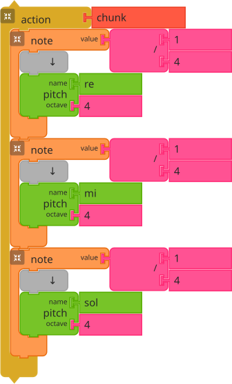
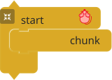
Every time you create a new Action stack, Music Blocks creates a new
block specific to, and linked with, that stack. (The new block is
found at the top of the Block palette, found on the left edge of the
screen.) Clicking on and running this block is the same as clicking on
your stack. By default, the new blocks are named chunk, chunk1,
chunk2... but you can rename them by editing the labels on the
Action blocks.
An Action block contains a sequence of actions that will only be executed when the block is referred to by something else, such as a start block. This is useful in orchestrating more complex programs of music.
A Start Block is an Action that will automatically be executed once the start button is pressed. This is where most of your programs will begin at. There are many ways to Run a program: you can click on the Run button at the upper-left corner of the screen to run the music at a fast speed; you can click the Run Slowly button to run it slower (useful for debugging); and the Step button can be used to step through the program one block per button press.
In the example above, the Action block named "chunk" is inside of a Start block, which means that when any of the start buttons is pressed, the code inside the Start block (the Action block) will be executed. You can add more chunks after this one inside the Start block to execute them sequentially.
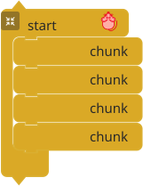
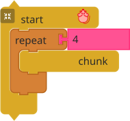
You can repeat actions either by using multiple Action blocks or using a Repeat block. RUN LIVE
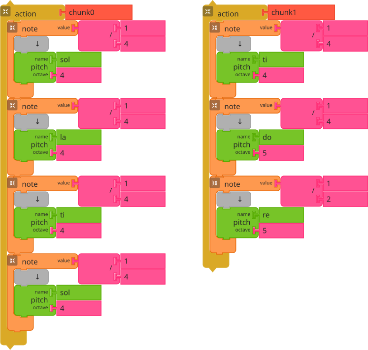
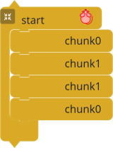
You can also mix and match actions. Here we play the Action block with
name chunk0, followed by chunk1 twice, and then chunk0 again.
RUN LIVE
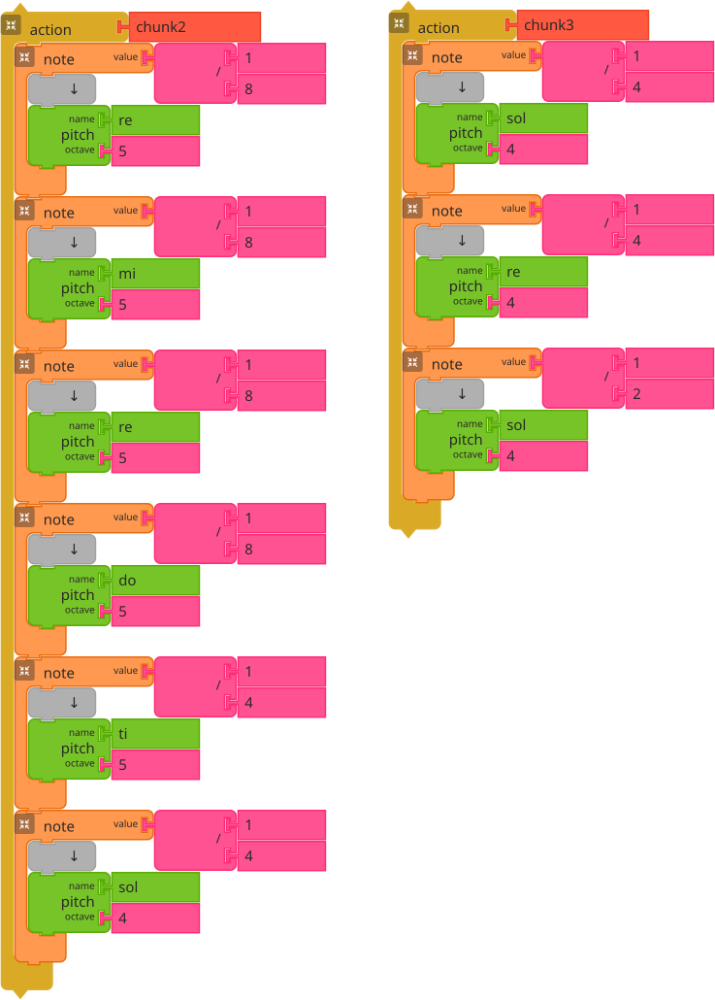
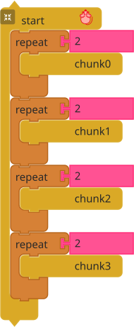
A few more chunks and we can make a song. (Can you read the block notation well enough to guess the outcome? Are you familiar with the song we created?) RUN LIVE
There are many ways to transform pitch, rhythm, and other sonic qualities.
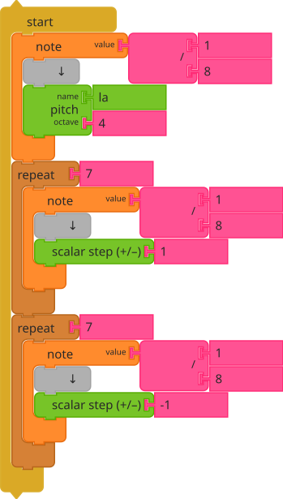
The Step Pitch block will move up or down notes in a scale from the
last played note. In the example above, Step Pitch blocks are used
inside of Repeat blocks to repeat the code 7 times, playing up and
down a scale. RUN LIVE
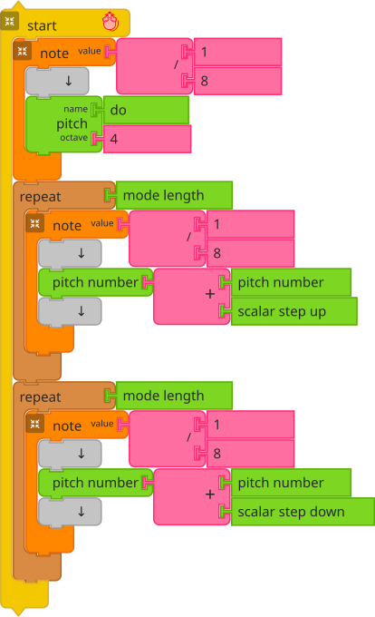
Another way to move up and down notes in a scale is to use the Scalar Step Up and Scalar Step Down blocks. These blocks calculate the number of half-steps to the next note in the current mode. (You can read more about Musical Modes below.) Note that the Mouse Pitch Number block returns the pitch number of the most recent note played.
In this example, we are using the Mode length block, which returns the number of scalar steps in the current mode (7 for Major and Minor modes). RUN LIVE
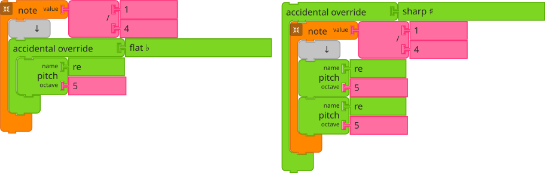
The Accidental block can be wrapped around Pitch blocks, Note
value blocks, or chunks of notes inside of Action
blocks. A sharp will raise the pitch by one half step. A flat will
lower by one half step. In the example, on the left, just the Pitch
block re is lowered by one half step; on the right, both Pitch
blocks are raised by one half step. (You can also use a double-sharp
or double-flat accidental.) RUN LIVE
Double-sharps (𝄪) and double-flats (𝄫) are used in certain keys and advanced compositions to preserve correct scale structure or harmonic context. Here are a few examples:
F𝄪 is used instead of G to keep the pattern of moving step by step through the musical alphabet (A to G).
D♯ Major Scale
C𝄪 is written instead of D so that the note names follow the correct sequence and each letter is used only once.
F♭ Major Scale
B𝄫 is used instead of A to preserve the proper spacing between scale steps.
Béla Bartók’s Mikrokosmos No. 136 – "Whole-tone Scale"
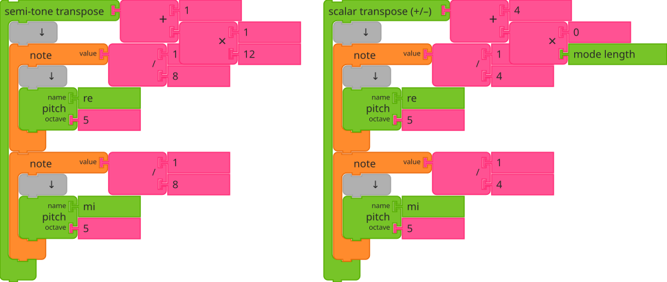
There are multiple ways to transpose a pitch: by semitone or scalar
steps or by a ratio. The semitone-transposition block (above left)
can be used to make larger shifts in pitch in half-step units. A
positive number shifts the pitch up and a negative number shifts the
pitch down. The input must be a whole number. To shift up an entire
octave, transpose by 12 half-steps. -12 will shift down an entire
octave.
The Scalar-transposition block (above right) shifts a pitch based on
the current key and mode. For example, in C Major, a scalar
transposition of 1 would transpose C to D (even though it is a
transposition of 2 half steps). To transpose E to F is 1
scalar step (or 1 half step). To shift an entire octave, scalar
transpose by the mode length up or down. (In major scales, the mode
length is 7.) RUN LIVE
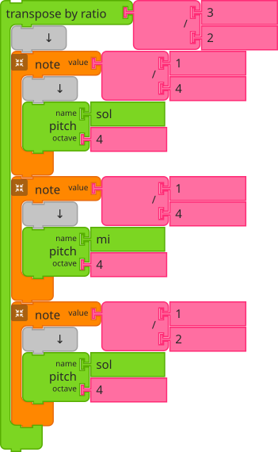
The Transpose-by-ratio block shifts a pitch based on a ratio. For example, a ratio of 2:1 would shift a pitch by an octave; a ratio of 3:2 would shift a pitch by a fifth. RUN LIVE
As a convenience, a number of standard scalar transpositions are provided: Unison, Second, Third, ..., Seventh, Down third, and Down sixth, as well as a transposition for Octave.
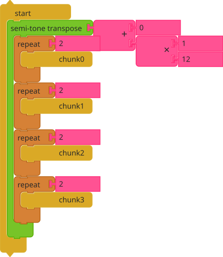
In the example above, we take the song we programmed previously and raise it by one octave. RUN LIVE
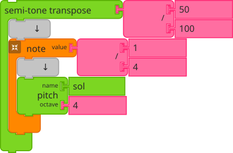
A cent is a unit of measure for the ratio between two frequencies. A semitone is defined as 100 cents. The frequency between two adjacent pitches would be 50 cents. You can use the Semitone transpose block to shift a pitch by cents.
In the example above, G4 + 50 cents is 403Hz. (Recall that G4 is 392Hz and G#4 is 415Hz). RUN LIVE
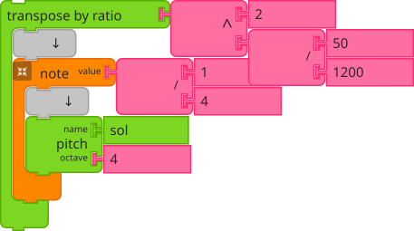
You can also use the ratio block for cents, although the math is a bit more complicated. RUN LIVE
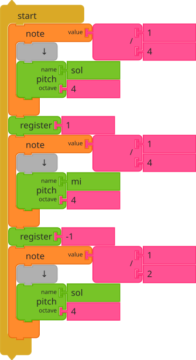
The Register block provides an easy way to modify the register
(octave) of the notes that follow it. In the example above it is first
used to bump the Mi 4 note up by one octave and then to bump the
Sol 4 note down by one octave. RUN LIVE
| Representation | Pitch Movement | Properties |
|---|---|---|
| Scalar Step | scalar | 0=no change |
| 1=next scalar pitch in current key and mode | ||
| -1=previous scalar pitch in current key and mode | ||
| If the argument to scalar step is positive, it moves up the scale; if it is negative, it moves down the scale. |
| Music Blocks Code for Scalar Step |
|---|
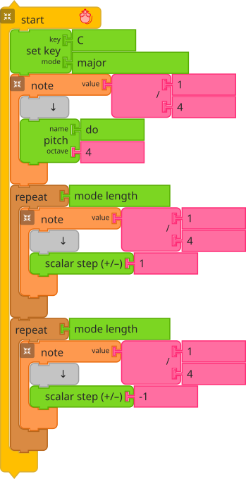 |
| The example above demonstrates traveling up and down the major scale by moving an octave up from the starting note, do, one note at a time and then back down the same way. RUN LIVE |
| Standard Notation with Scalar Step |
|---|
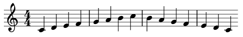 |
| Representation | Pitch Movement | Properties |
|---|---|---|
| Transposition | semitone | Creates shifts in pitch by half-steps |
| If the argument to transpose is positive, it will shift upwards in pitch; if it is negative, there will be a downwards shift. | ||
| There are 12 half-steps shifts per octave. | ||
| An argument of -12 will shift down one octave. | ||
| An argument of zero will not change the pitch. |
| Music Blocks Code with Scalar Transpose |
|---|
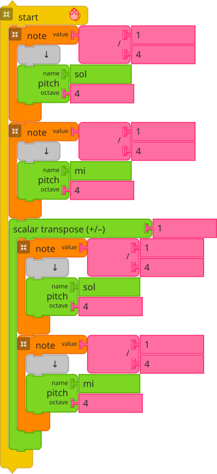 RUN LIVE |
| Standard Notation for Scalar Transpose |
|---|
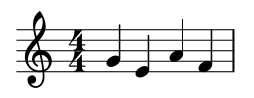 |
| Representation | Pitch Movement | Properties |
|---|---|---|
| Transposition | Scalar | Shifts the pitch based on the current key and mode |
| Each number represents a scalar step. | ||
| Scalar transposition can transform your original key to a new key by counting the notes between the keys. | ||
| For example: Transposing C-D-E-F by 4 (fifth) will give us G-A-B-C | ||
| To transpose an octave: shift by the mode length (7 in major scales) up or down. |
The Set key block is used to change both the mode and key of the current scale. (The current scale is used to define the mapping of Solfege [when set Movable Do = True] to notes and also the number of half steps take by the the Scalar step block.) For example, by setting the key to C Major, the scale is defined by starting at C (or Do) and applying the pattern of half steps defined by a Major mode. In this case, the pattern of steps skips past all of the sharps and flats. (On a piano, C Major is just the white keys).
When using the Set key block, the mode argument is used to define the pattern of half steps and the key argument is used to define the starting position of the pattern. For example, when mode = "major" and key = "C", the pattern of half steps is 2 2 1 2 2 2 1 and the first note in the scale from which the pattern is applied is "C".
| Set Key Example |
|---|
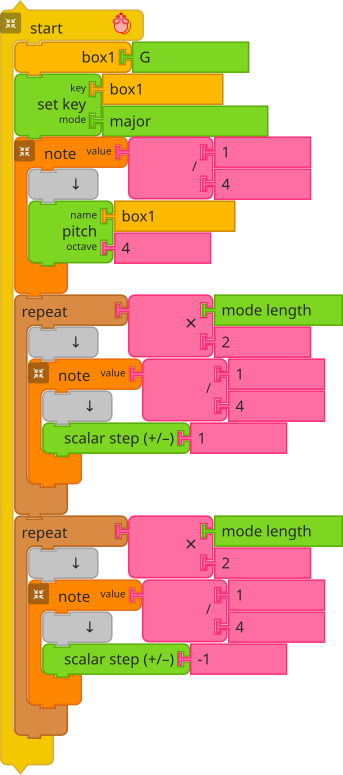 |
Using the example above, one can modify the arguments to Set key in order to move up and down one octave in a scale. The example shows G Major scale, which has an F#, but it could be used for any combination of key and mode. RUN LIVE
| Standard Notation for Set Key Example |
|---|
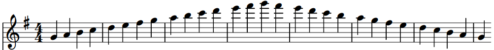 |
Various examples for Major modes are shown in the following table.
| Key | Mode | Mode Pattern in Half Steps | Pitch Pattern |
|---|---|---|---|
| C | Major | 2 2 1 2 2 2 1 | C, D, E, F, G, A, B, C |
| G | Major | 2 2 1 2 2 2 1 | G, A, B, C, D, E, F#, G |
| D | Major | 2 2 1 2 2 2 1 | D, E, F#, G, A, B, C#, D |
| F | Major | 2 2 1 2 2 2 1 | F, G, A, B♭, C, D, E, F |
| B♭ | Major | 2 2 1 2 2 2 1 | B♭, C, D, E♭, F, G, A, B♭ |
The next table is the same sets of various keys (starting pitches), but the mode is set to "Dorian" instead of Major.
| Key | Mode | Mode Pattern in Half Steps | Pitch Pattern |
|---|---|---|---|
| C | Dorian | 2 1 2 2 2 1 2 | C, D, E♭, F, G, A, B♭, C |
| G | Dorian | 2 1 2 2 2 1 2 | G, A, B♭, C, D, E, F, G |
| D | Dorian | 2 1 2 2 2 1 2 | D, E, F, G, A, B, C, D |
| F | Dorian | 2 1 2 2 2 1 2 | F, G, A♭, B♭, C, D, E♭, F |
| B♭ | Dorian | 2 1 2 2 2 1 2 | B♭, C, D♭, E♭, F, G, A♭, B♭ |
This last table is the same set of keys as the above two tables, but the mode is set to "Phrygian".
| Key | Mode | Mode Pattern in Half Steps | Pitch Pattern |
|---|---|---|---|
| C | Phrygian | 1 2 2 2 1 2 2 | C, D♭, E♭, F, G, A♭, B♭, C |
| G | Phrygian | 1 2 2 2 1 2 2 | G, A♭, B♭, C, D, E♭, F, G |
| D | Phrygian | 1 2 2 2 1 2 2 | D, E♭, F, G, A, B♭, C, D |
| F | Phrygian | 1 2 2 2 1 2 2 | F, G♭, A♭, B♭, C, D♭, E♭, F |
| B♭ | Phrygian | 1 2 2 2 1 2 2 | B♭, C♭, D♭, E♭, F, G♭, A♭, B♭ |
Notice how in all the examples, the sets with the same mode results in the same "Mode Pattern of Half Steps", but the resultant "Pitch Pattern" is different. Also, notice how G Dorian and F Major have the same set of pitches in "Pitch Pattern" (they both have B♭ and no other sharps or flats). C Dorian, D Phrygian, and B♭ Major all have the same set of pitches as well (all three have B♭ and E♭).
If these lists were expanded further, there would be many more such examples. These are because these modes (Major, Dorian, and Phrygian) all have essentially the same modal pattern; the starting point is just shifted slightly for each: Dorian could be thought of starting from the second scale degree of Major and Phrygian from the third, for example. Not all modes have this relationship to Major. The ones that do are: Ionian (Major), Dorian, Phrygian, Lydian, Myxolydian, Aeolian (Minor), and Locrian.
Set Key & Scalar Step
The Set key block is used to select a subset of notes in the given temperament. (By default, Music Blocks uses equal temperament of 12 equal divisions of the octave. The key and mode determine which of these notes will be used.)
Set Key & Movable Do
The Set Key block will change the key and mode of the mapping
between solfege, e.g., Do, Re, Mi, to note names, e.g., F#,
G#, A#, when in F# Major. It only impacts the mapping of solfege
when the movable Do block is set to True.
You can find the Set key block on the Intervals palette.
| Music Blocks for Set Key and Movable Do |
|---|
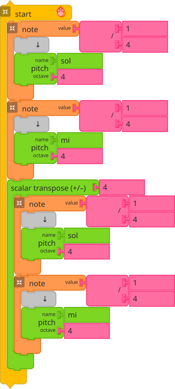 RUN LIVE |
| Standard Notation for Set Key and Movable Do |
|---|
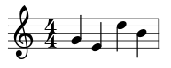 |
| Representation | Pitch Movement | Properties |
|---|---|---|
| Scale Degree | Scalar | The key block sets the key and mode. |
| The scale degree blocks indicate which position the pitch is taking in the scale relative to the tonic which is "scale degree 1". |
| Music Blocks Code with Scale Degrees 1-5 |
|---|
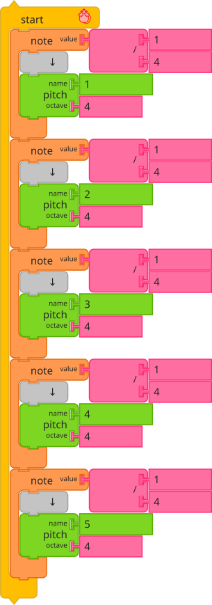 RUN LIVE |
| Standard Notation for Scale Degrees 1-5 |
|---|
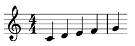 |
| Representation | Pitch Movement | Properties |
|---|---|---|
| Movable “Do” | Advanced transposition by mode | Movable Do in combination with the Scale/Mode blocks will transpose sections of music in a nuanced way. |
| The Set-key block allows you to change both the mode and key of how solfege is mapped to the notes. | ||
| For example, in C major - Do is C, Re is D, Mi is E, etc. | ||
| In F major - Do is F, Re is G, Mi is A |
| Music Blocks Code with Set Key and Movable Do |
|---|
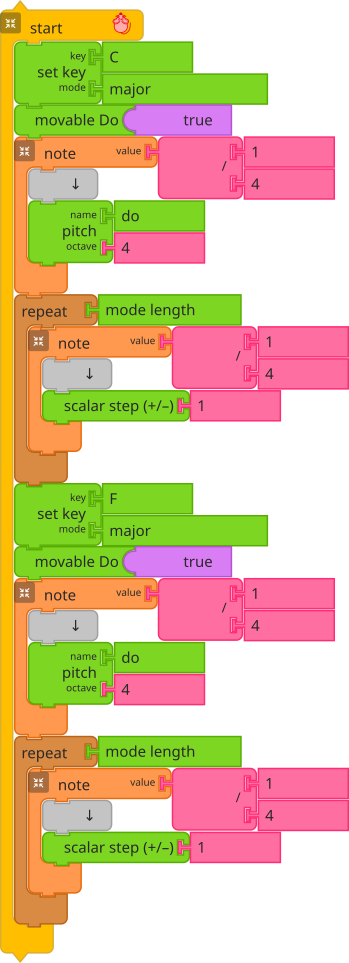 RUN LIVE |
| Standard Notation Code for Set Key and Movable Do |
|---|
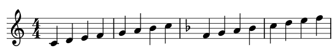 |
| Representation | Pitch Movement | Properties |
|---|---|---|
| Movable “Do” | Advanced transposition by mode | You also have the option of changing the mode to Minor, Major, Chromatic, and many other exotic modes like hirajoshi, as shown in the example below. |
| Music Blocks for Set Key and Scalar Step |
|---|
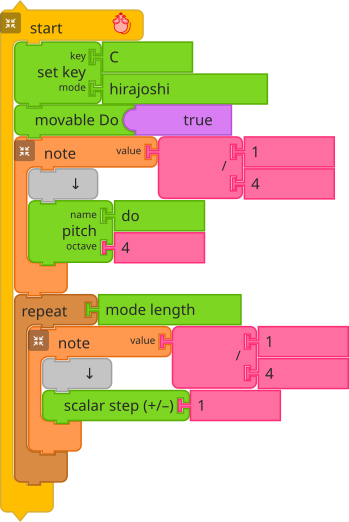 RUN LIVE |
| Standard Notation with Set Key and Scalar Step |
|---|
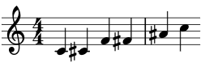 |
Music Blocks allows users to express and explore musical ideas in a variety of different systems. The main systems of expression are fixed and movable.
Fixed and Movable Systems
Fixed pitch systems represent pitches in an absolute way. Pitches in a fixed system do not change, regardless of a tonal context (such as key or mode). Movable systems, on the other hand, represent pitches in a relative way based on their tonal context.
An example of a fixed system is Alphabet Notation. Pitches are
expressed as A, B, C, D, E, F, and G. Regardless of
whether the key is C major or G minor, the pitch of G is the
same. In Alphabet Notation, pitches are the same ("fixed") regardless
of the context.
An example of a movable system is Scale Degree. Pitches are expressed
as 1, 2, 3, 4, 5, 6, and 7. For C major, these pitches
are C, D, E, F, G, A, and B. For G (natural) minor,
these pitches are G, A, B♭, C, D, E♭, and F. For D
dorian, these pitches are D, E, F, G, A, B, and C. In
all three examples, the pitches are determined by the tonal context.
Solfege is an example of a system that can be either fixed or movable; it can either be a fixed system (Fixed Solfege) or a movable system (Movable Solfege).
Fixed Solfege works like the alphabet system; La is A, Ti is
B, Do is C, etc. Context does not affect the sounding
pitch. Movable Solfege works like the Scale Degree system; for any
major, Do is 1st scale degree, Re is 2nd, Mi is 3rd, Fa is
4th, etc. Hence, in Movable Solfege in the key of G (natural) minor,
Do is G, Re is A, et al.
Music Blocks users can create and preview code in both Fixed Solfege and Movable Solfege. Teachers and learners may use either system (or both) to express their musical ideas as well as deepen their understanding of music.
Using Tonal Context with Movable Systems
For movable systems an important point of context is its key and
mode. For "C Major", the key is "C" and the mode is "Major" (also
called Ionian). Key and mode are important as they define the tonal
framework, i.e., which pitches are "in" and which are "out". It also
defines the function of the pitches within the framework. This is why
for scale degrees 1, 2, 3, 4, and 5, the expected result for
C major is C, D, E, F, and G (skipping any sharps/flats),
while those same scale degrees for D major are D, E, F#, G,
and A. The set of pitches that make up C major have no sharps or
flats, so they are skipped. D major has two sharps, F# and C#. The
F# is the 3rd scale degree for D major.
Scale Degree with Set Key is a very powerful tool for expression. It is also very common in music pedagogy. However, because the number values 1-7 are hard wired into this system, it is a tool that works best to express seven-pitch tonal frameworks (e.g. major, minor, and other common seven pitch scales). For musical ideas where a more purely mathematical form of expression is required, Music Blocks offers the user the nth Modal Pitch block.
nth Modal Pitch is similar to Scale Degree in that it is a movable
system that uses numbers to express pitches. However, unlike Scale
Degree, nth Modal Pitch starts at 0, allows for negative
numbers, and is not restricted to a seven-pitch tonal framework. 0
is the first pitch of the mode, 1 is the next pitch, 2 is the
pitch above that, etc. -1 is the pitch before the first pitch of
the mode. This tool is especially helpful for expressing a musical
idea that requires computation as you can run computations directly
on the number value. It is also helpful if you are, for example,
creating music in a whole tone (six note) pitch space. In the case of
Set Key set to "whole tone", 6 would be the octave above.
Pitch Number, MIDI, and Set Pitch Number Offset
Pitch Number is similar to nth Modal Pitch in that it is a
zero-based, mathematical system to express pitches. However, unlike
nth Modal Pitch, Pitch Number disregards any tonal framework. It
is also chromatic by default, meaning that its pitch space includes
the sharp/flat pitches (black keys on piano) as well as the natural
pitches (white keys on piano). By default, middle C (C_4) is 0. The
C major scale in the 4th octave is 0, 2, 4, 5, 7, 9, and
11. 12 is the C an octave above middle C (C_5). This system is
useful mathematically, but because it disregards key, it is difficult
to control when creating music. That being said, fretted instruments
such as ukulele and guitar use this system to express pitch, so it is
a good system for expressing how these instruments work.
MIDI also uses a similar system to Pitch Number to express pitches,
but the 0 is offset from Music Blocks' default. In order to change the
sounding pitch of 0 for Pitch Number, use set pitch number
offset. This makes Pitch Number blocks behave as a relative system
as it transposes the pitches up or down accordingly (but has no effect
on key).
Two Subsystems for Movable
For Movable Do, there exists yet two more systems. One system, which
we call Movable=Do, allows the user to express solfege syllables in
relation to the Major mode. Therefore, if a user were to specify A
minor, then La would be A, the first scale degree in A Minor. The
other system, which we call Movable=La allows the user to express
solfege in relation to the particular mode specified. Therefore, if a
user were to specify A Minor, then Do would be A. Scale Degree works
like Movable=La by default such that 1 is always the first pitch
of a given mode.
Because some users may want to explicitly spell out all of the pitches regardless of the chosen key, we allow them to use Scale Degree with the Movable Do block (remember, Scale Degree works like Movable=La by default). Please see this code as an example.
The following chart describes the behavior of different blocks depending on whether or not a Movable Do block is present.
| Block(s) | Fixed or Movable? (Do or La?) | Set Key Transformation? |
|---|---|---|
| Alphabet Pitch | Fixed | No effect. |
| Solfege | Fixed by default | No effect. |
| Solfege and Movable=Do | Specified via "movable" block set to Do | Yes. |
| Solfege and Movable=La | Specified via "movable" block set to La | Yes. Works like Scale Degree. |
| nth modal pitch | Movable | Yes. Good for modes of any length. |
| Scale Degree | Movable | Yes. Most useful for 7 note systems. Works just like Movable=La for Solfege by default. |
| Scale Degree and Movable=Do | Movable | Yes. When preceded by Movable=Do, the user can be explicit in their spelling. |
| Scalar Step | Movable | Yes. Navigates up/down within nth modal pitch space. |
| Scalar Interval | Movable | Yes. Adds above/under within nth modal pitch space. |
| Scalar Inversion | Movable | Yes. Inversion around a specified axis within nth modal pitch space. |
| Pitch Number | Movable | No effect. Pitches can be transformed via Set Pitch Number Offset. |
Illustrative example:
The following example demonstrates how the Scale Degree functionality combines math and musical modifiers. When combining numbers and accidentals, it recreates the same functionality as the Scale Degree block.
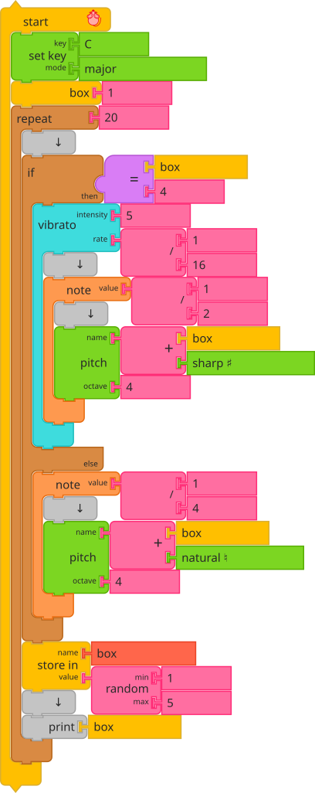
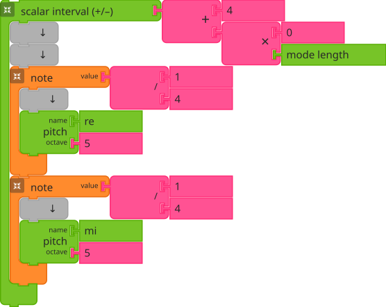
The Scalar interval block calculates a relative interval based on
the current mode, skipping all notes outside of the mode. For example,
a fifth, and adds the additional pitches to a note's playback. In
the figure, we add La to Re and Ti to Mi.
As a convenience, a number of standard scalar intervals are provided on the Intervals palette: Unison, Second, Third, ..., Seventh, Down third, and Down sixth.
The Scalar interval measure block can be used to measure the number of scalar steps between two pitched.
Absolute (or semitone) intervals are based on half-steps.
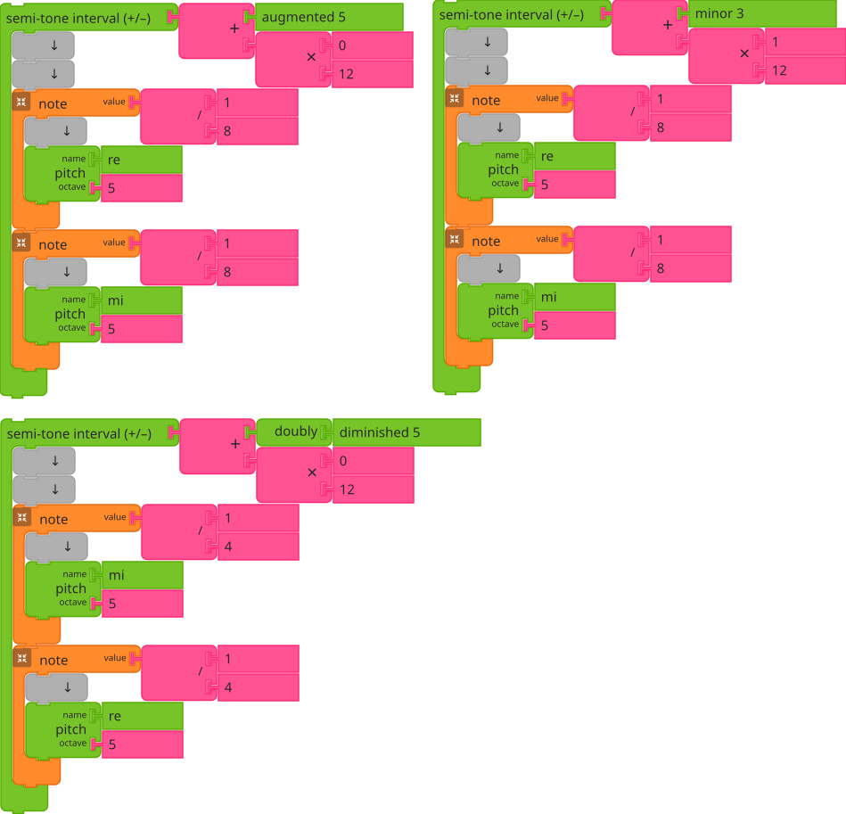
The Augmented block calculates an absolute interval (in half-steps), e.g., an augmented fifth, and adds the additional pitches to a note. Similarly, the Minor block calculates an absolute interval, e.g., a minor third. Other absolute intervals include Perfect, Diminished, and Major.
In the augmented fifth example above, a chord of D5 and A5 are
played, followed by a chord of E5 and C5. In the minor third
example, which includes a shift of one octave, first a chord of D5
and F5 is played, followed by chord of E5 and G6.
As a convenience, a number of standard absolute intervals are provided on the Intervals palette: Major 2, Minor 3, Perfect 4, Augmented 6, Diminished 8, et al.
The Doubly block can be used to create a double augmentation or double diminishment.
The semitone interval measure block can be used to measure the number of half-steps between two pitches.
Another way to think about intervals is in terms of ratios. For example, a ratio of 2:1 would be an octave shift up; 1:2 would be an octave shift down; 3/2 would be a fifth.
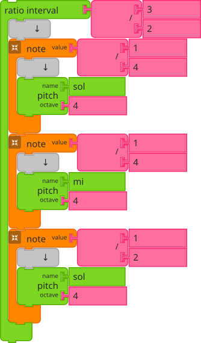
The Ratio Interval block lets you generate an interval based on a ratio.
A chord is a group of notes that are played together (often used for harmony in music). There are triads (three notes), tetrachords (four notes), and even five-, six-, and seven-note chords.
The Chord block builds a chord from a base note. RUN LIVE
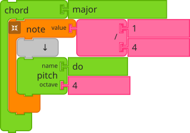
We support many basic chords:
| chord | intervals | example |
|---|---|---|
| major | 1 4 7 | C major C - E - G |
| minor | 1 3 7 | C minor C - E♭ - G |
| dominant 7 | 1 4 7 10 | C7 C - E - G - B♭ |
| minor 7 | 1 3 7 10 | Cmin7 C - E♭ - G - B♭ |
| major 7 | 1 4 7 11 | Cmaj7 C - E - G - B |
The Arpeggio block also builds a chord from a base note, but rather than playing all of the pitches at once, each pitch is played in sequence.
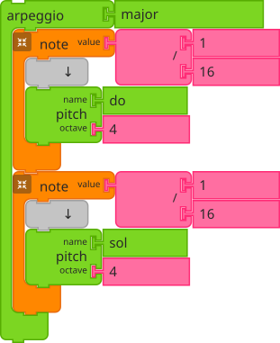
In the example above, since the Major chord intervals are 1 4 7, the notes played are do, mi, sol, sol, ti, mi. RUN LIVE
The Invert block will rotate a series of notes around a target
note. There are three different modes of the Invert block: even,
odd, and scalar. In even and odd modes, the rotation is based
on half-steps. In even and scalar mode, the point of rotation is
the given note. In odd mode, the point of rotation is shifted up by
a 1/4 step, enabling rotation around a point between two notes. In
"scalar" mode, the scalar interval is preserved around the point of
rotation.
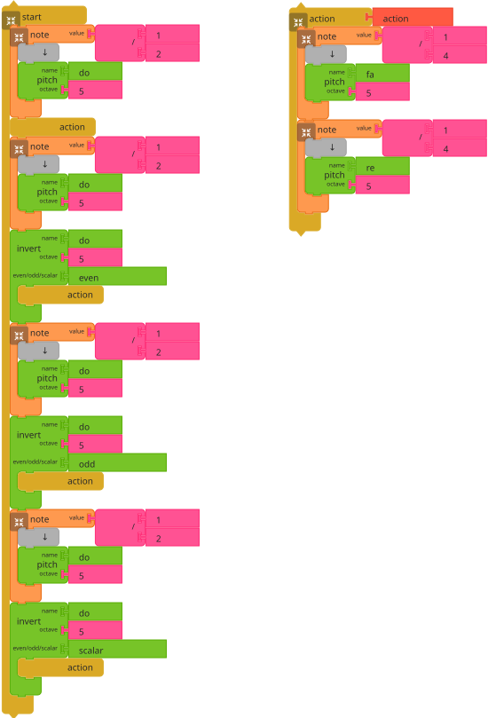
NOTE: The initial C5 pitch (as a half note) remains unchanged (in
all of the examples) as it is outside of the invert block.
The above example code has an even inversion for two notes F5 and
D5 around the reference pitch of C5. We would expect the following
results:
Even inversion
| Starting pitch | Distance from C5 |
Inverse distance from C5 |
Ending pitch |
|---|---|---|---|
F5 |
5 half steps above | 5 half steps below | G4 |
D5 |
2 half steps above | 2 half steps below | B♭4 |
This operation can also be visualized on a pitch clock. The arrows on the following diagram point from the starting pitch, around the axis of the reference pitch, to its destination ending pitch.
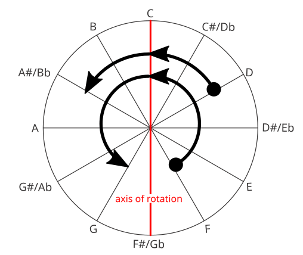
In standard notation the result of this even inversion operation is depicted in the second measure of the following example. The first measure is the original reference.
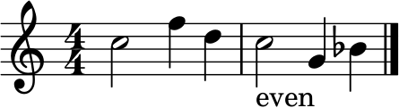
Underneath the even inversion in the example code is an odd
inversion for the same two notes of F5 and D5 around the same
reference pitch of C5. We would expect the following results:
Odd inversion
| Starting pitch | Distance from midway-point between C5 and C♯5 |
Inverse distance from midway-point between C5 and C♯5 |
Ending pitch |
|---|---|---|---|
F5 |
4.5 half steps above | 4.5 half steps below | A♭4 |
D5 |
1.5 half steps below | 1.5 half steps above | B4 |
This operation can be visualized on a pitch clock similar to even
inversion except offset in-between C5 and C♯5 (i.e. quarter step
above C5).
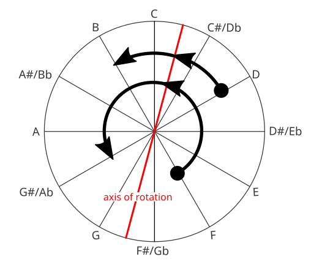
In standard notation the result of this odd inversion operation is
depicted in second measure of the following example. The first measure
is the original reference. NOTE: The C5 pitch remains unchanged as
it is not operated upon in the example block code (above). If it were
contained in the operation it would be changed to C♯5 (i.e. C5 is
0.5 half steps below the axis of rotation, so the result of an
inversion around C5 and odd would be 0.5 half steps above the
axis of rotation).
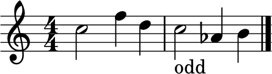
Scalar inversion
Underneath the even and odd inversion blocks in the example code is an inversion block set to scalar. We would expect the following results:
| Starting pitch | Scalar distance from C5 (in steps) |
Inverse scalar distance from C5 (in steps) |
Ending pitch |
|---|---|---|---|
F5 |
3 above (C5 --> D5 --> E5 --> F5) | 3 below (C5 --> B4 --> A4 --> G4) | G4 |
D5 |
1 above (C5 --> D5) | 1 below (C5 --> B4) | B4 |
This operation can be visualized on a pitch clock similar to odd and even except that all non-scalar pitches (i.e. pitches outside the chosen key) are skipped. NOTE: The scalar pitches are shown in bold in the following pitch clock diagram.
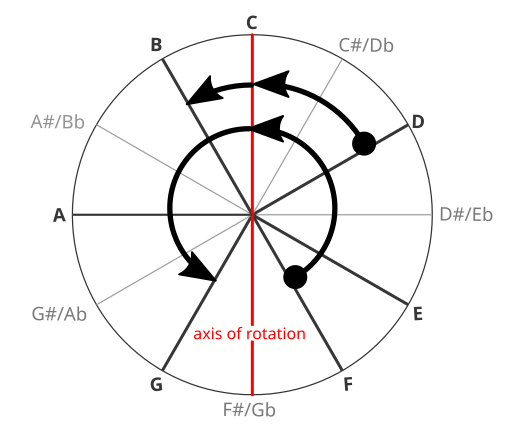
In standard notation the result of scalar inversion operation is depicted in the second measure of the following example. The first measure is the original reference.
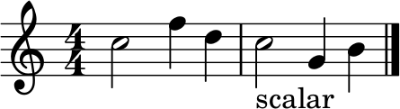
In the invert (even) example above, notes are inverted around C5.
In the invert (odd) example, notes are inverted around a point
midway between C5 and C♯5. In the invert (scalar) example,
notes are inverted around C5, by scalar steps rather than
half-steps.
Converters are used to transform one form of inputs into other, more usable form of outputs. This section of the guide will talk about the various conversion options Music Blocks has to offer.
Generalized shape of a converter is:
where the right argument is converted accordingly, and output is received on the left side.
Note: Before an introduction of the different types of converters, a little introduction on Y staff in Music Blocks. Staff is a set of horizontal lines and spaces and different positions along Y axis represents different notes. [C, D, E, F, G, A, B]
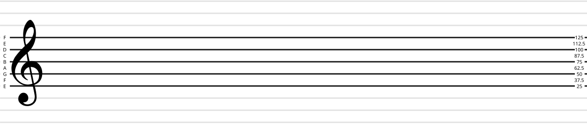
This converter takes input in the form of a number that represents Staff Y position in pixels, and processes the value such that it can be used with certain pitch blocks (pitch number, nth modal pitch, pitch) to produce notes corresponding to given Staff Y position as an argument.
Additionally, the block can be plugged into a print block to view the converted note value.
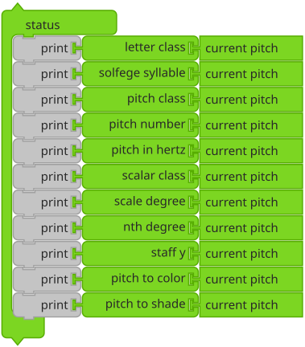
Pitch converter offers a range of options through a pie-menu based interface and it can potentially convert or extract info out of the current playing pitch using the current pitch block as an input. It can also take custom input in form or solfege, hertz, pitch number etc.
All these options are provided in the form of a pie-menu which can be accessed simply by clicking on the converter.
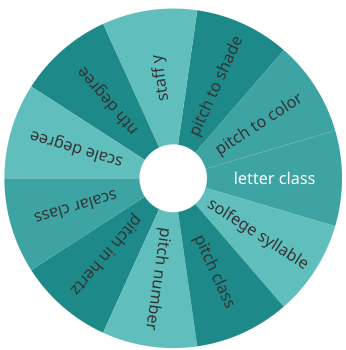
Below explained is the utility of every conversion option:
Prints the alphabet data of the note being played e.g A, B, C, D, E, F, G, including accidentals.
Prints the alphabet data of the note being played e.g A, B, C, D, E, F, G. It doesn't print any info regarding accidentals.
Similar to Alphabet class, returns the data in form of solfege e.g do, re, mi. It too, gives no info regarding accidentals.
Returns a number between 0 to 11, corresponding to the note played, where C is 0 and B is 11. Each increase in the number signifies an increase by one semitone.
Value of the pitch of the note currently being played. It is different from Pitch class in the way that it can go below 0 and above 11 depending upon the octave.
Returns the value in hertz of the pitch of the note being currently played.
Returns a number between 1-7 corresponding to the scale degree of the note being played, with reference to the chosen mode. Provides no info regarding accidentals.
Intuitively, returns the scale degree of the note being played with reference to the chosen mode. It can also be thought of as Scalar class with accidentals.
Zero-based index of the degree of note being played in the chosen mode.
Returns the Y staff position of the note being played according to staff dimensions. It takes into account only the alphabet class, no accidental info is processed.
This converter takes a numeric value which denotes pitch number and returns the octave corresponding to that pitch number.
This converter takes a numeric value which denotes pitch number and returns the pitch name corresponding to that pitch number. No octave is inferred.
| Converter Name | Description |
|---|---|
| alphabet | Converts pitch to letter (as defined above). G maps to G. G♯ maps to G#. |
| alphabet class | Converts pitch to letter (as defined above). G maps to G. G♯ also maps to G. |
| solfege syllable | Converts pitch to solfege (as defined above). G maps to sol. |
| solfege class | Converts pitch to solfege class (as defined above). G maps to sol. G♯ maps to sol. |
| pitch class | Converts pitch to pitch class (as defined above). G maps to 7. |
| scalar class | Converts pitch to scalar class (as defined above). G maps to 5. |
| scale degree | Converts pitch to scale degree (as defined above). G maps to 5. |
| nth degree | Converts pitch to nth degree (as defined above). G maps to 4. |
| staff y | Maps the current pitch to a y value that corresponds to a position on the staff. G4 maps to 50. |
| pitch number | Converts pitch to pitch number (as defined above). G maps to 7. |
| pitch in hertz | Converts pitch to hertz. G4 maps to 392Hz. |
| pitch to color | Converts pitch to a color value (0-100). C maps to 0, G maps to 58.3, etc. |
| pitch to shade | Converts the octave value of the current pitch to a shade. Octave 4 maps to 50. |
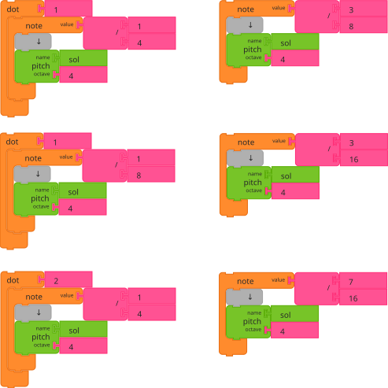
You can "dot" notes using the Dot block. A dotted note extends the
rhythmic duration of a note by 50%. E.g., a dotted quarter note will
play for 3/8 (i.e. 1/4 + 1/8) of a beat. A dotted eighth note will
play for 3/16 (i.e. 1/8 + 1/16) of a beat. A double dot extends
the duration by 75% (i.e. 50% + [50% of 50%]). For example, a
double-dotted quarter note will play for 7/16 (i.e. 1/4 + 1/8 +
1/16) of a beat (which is the same as 4/16 + 2/16 + 1/16 =
7/16).
RUN LIVE
The dot block is useful as an expression of musical rhythm--it is
convenient and helps to organize musical ideas (e.g. many melodies use
dots as the basis of their rhythmic motifs), however you can achieve
the same rhythmic result as dot by putting the calculation directly
into note value as well. For example, indicating 3/8 instead of
1/4 will result in a dotted quarter note.
The chart below shows two common examples, dotted quarter and dotted eighth, and how to achieve them with either the dot block or by direct calculation into a note's note value.
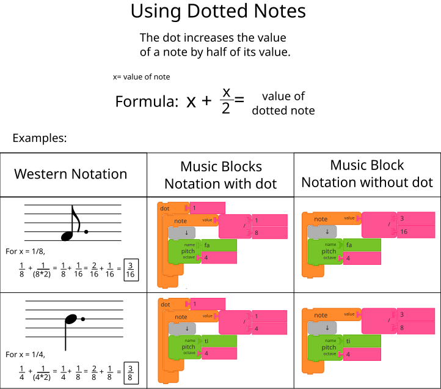
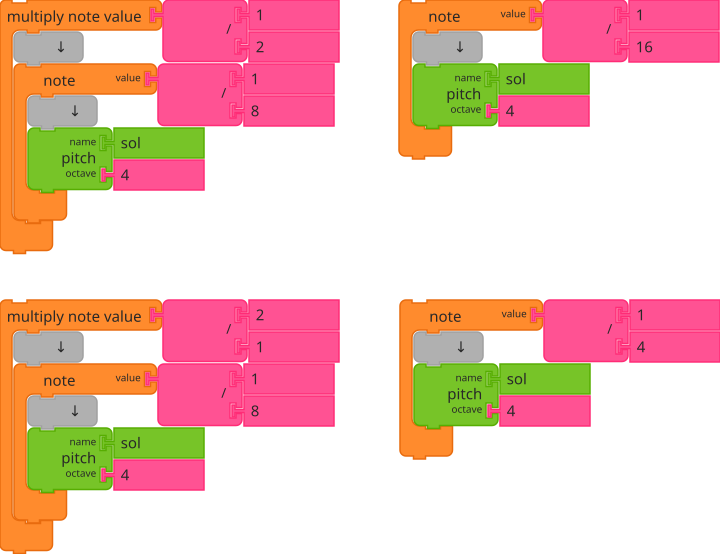
You can also multiply (or divide) the note value, which will change
the duration of the notes by changing their note values. Multiplying
the note value of an 1/8 note by 1/2 is the equivalent of playing
a 1/16 note (i.e. 1/2 * 1/8 = 1/16) . Multiplying the note value
of an 1/8 note by 2/1 (which has the effect of dividing by 1/2)
will result in the equivalent of a 1/4 note.
RUN LIVE
In the above example, the sequence of drum note values is decreased over time, at each repetition. RUN LIVE
There are several ways to repeat notes. The Repeat block will play a sequence of notes multiple times; the Duplicate block will repeat each note in a sequence.
In the example, on the left, the result would be Sol, Re, Sol, Sol,
Re, Sol, Sol, Re, Sol, Sol, Re, Sol; on the right the result would be
Sol, Sol, Sol, Sol, Re, Re, Re, Re, Sol, Sol, Sol, Sol.
RUN LIVE
The Swing block works on pairs of notes (specified by note value), adding some duration (specified by swing value) to the first note and taking the same amount from the second note. Notes that do not match note value are unchanged.
In the example, fa4 would be played as a 1/6 note and sol4 would
be played as a 1/12 note (1/8 + 1/24 === 1/6 and 1/8 - 1/24 ===
1/12). Observe that the total duration of the pair of notes is
unchanged.
Tie also works on pairs of notes, combining them into one note. (The notes must be identical in pitch, but can vary in rhythm.)
The beat of the music is determined by the Meter block (by default, it is set to 4:4).
The Pickup block can be used to accommodate any notes that come in before the beat.
The Beat count block is the number of the current beat, eg 1, 2, 3, or 4. In the figure, it is used to take an action on the first beat of each measure.
The Measure count block returns the current measure.
Specifying beat is useful in that you can have the character of a note
vary depending upon the beat. In the example below, the volume of
notes on Beat 1 and Beat 3 are increased, while the volume of off
beats is decreased.
The On-Beat-Do and Off-Beat-Do blocks let you specify actions to take on specific beats. (Note that the action is run before any blocks inside the note block associated with the beat are run.)
More examples can be found in the Graphics section below.
The Staccato block shortens the length of the actual note—making them tighter bursts—while maintaining the specified rhythmic value of the notes.
The Slur block lengthens the sustain of notes—running longer than the noted duration and blending it into the next note—while maintaining the specified rhythmic value of the notes.
The Backward block will play the contained notes in reverse order
(retrograde). In the example above, the notes in chunk are played as
Sol, Ti, La, Sol, i.e., from the bottom to the top of the
stack.
An example from Bach is provided. In the example, there are two voices, one which plays the composition forward and one that plays the same composition backward. RUN LIVE
Note that all of the blocks inside a Backward block are reverse, so use this feature with caution if you include logic intermixed with notes.
The Set master volume block will change the master volume. The
default is 50; the range is 0 (silence) to 100 (full volume).
The Set synth volume block will change the volume of a particular
synth, e.g., violin, snare drum, etc. The default volume is 50;
the range is 0 (silence) to 100 (full volume). In the example, the
synth name block is used to select the current synth.
As a convenience, a number of standard volume blocks are provided: from loudest to quietest, there is fff, ff f, mf, mp, p, pp, and ppp. In musical terms "f" means "forte" or loud, "p" means "piano" or soft, and "m" means "mezzo" or middle.
The Set Relative Volume block modifies the clamped note's volume
according to the input value of the block in an added (or subtracted
when negative) percentage with respect to the original volume. For
example, 100 would mean doubling the current volume.
The Crescendo block will increase (or decrease) the volume of the
contained notes by a specified amount for every note played. For
example, if you have 3 notes in sequence contained in a Crescendo
block with a value of 5, the final note will be at 15% more
than the original value for volume.
NOTE: The Crescendo block does not alter the volume of a note as it is being played. Music Blocks does not yet have this functionality.
The default instrument is an electronic synthesizer, so by default, that is the instrument used when playing notes. You can override this default for a group of notes by using the Set Instrument block. It will select an instrument for the synthesizer for any contained blocks, e.g., violin. RUN LIVE
You can also override the default using the Set default instrument block. In the example above, the default instrument is set to piano, so any note that is not inside of a Set instrument block will be played using the piano synthesizer. The first note in this example is piano; the second note is guitar; and the third is piano. RUN LIVE
The Set Key block will change the key and mode of the mapping
between solfege, e.g., Do, Re, Mi, to note names, e.g., C,
D, E, when in C Major. Modes include Major and Minor, Chromatic,
and a number of more exotic modes, such as Bebop, Geez, Maqam, etc.
This block allows users to access "movable Do" within Music Blocks,
where the mapping of solfege to particular pitch changes depending on
the user's specified tonality.
RUN LIVE
The Define mode block can be used to define a custom mode by defining the number and size of the steps within an octave. You can use your custom mode with the Set key block.
The Vibrato Block adds a rapid variation in pitch to any contained
notes. The intensity of the variation ranges from 1 to 100 (cents),
e.g. plus or minus up to one half step. The rate argument determines
the rate of the variation.
The other effects blocks also modulate pitch over time. Give them a try. RUN LIVE
Each Start block runs as a separate voice in Music Blocks. (When you click on the Run button, all of the Start blocks are run concurrently.)
If we put our song into an action...
...we can run it from multiple Start blocks.
It gets more interesting if we shift up and down octaves.
And even more interesting if we bring the various voices offset in time RUN LIVE
An alternative to use a preprogrammed delay is to use the Broadcast block to bring in multiple voices. In the example above, after each section of the song is played, a new event is broadcasted, bringing in a new voice. Note the use of the Mouse Sync block. This ensures that the multiple voices are synced to the same master clock. RUN LIVE
A special Start drum version of the Start block is available for
laying down a drum track. Any Pitch blocks encountered while starting
from a drum will be played as C2 with the default drum sample. In
the example above, all of the notes in chunk will be played with a
kick drum.
RUN LIVE
Turtle graphics can be combined with the music blocks. By placing graphics blocks, e.g., Forward and Right, inside of Note value blocks, the graphics stay in sync with the music. In this example, the turtle moves forward each time a quarter note is played. It turns right during the eighth note. The pitch is decreased by one half step, the pen size decreases, and the pen color increases at each step in the inner repeat loop. RUN LIVE
Another example of graphics synchronized to the music by placing the graphics commands inside of Note value blocks. RUN LIVE
Another approach to graphics is to use modulate them based on the
beat. In the example above, we call the same graphics
action for each note, but the parameters associated with the action,
such as pen width, are dependent upon which beat we are on. On Beat 1,
the pen size is set to 50 and the volume to 75. On Beat 3, the
pen size is set to 25 and the volume to 50. On off beats, the pen
size is set to 5 and the volume to 5. The resultant graphic is
shown below. RUN LIVE
The On-Every-Note-Do block lets you specify an action to take whenever a note is played. In the example above, the note value is used to determine the portion of an arc to draw, i.e., a 1/4 note draws a 1/4 circle, a 1/2 note draw 1/2 circle, and a whole note draws a full circle.
The On-Every-Note-Do block is found in the Crab Canon project on the Planet to "plot the music". The mouse moves up and down based on the change in pich between notes and to the right in proportion to the note value.
Music Blocks has an internal "conductor" maintaining the beat. When the Run button is clicked, the program begins and an internal master (or "conductor") clock starts up. All of the music tries to stay synced to that clock.
For example, if you have multiple voices (mice), they all share the same conductor in order to keep on the same beat. If a voice (mouse) is falling behind, Music Blocks tries to catch up on the next note by truncating it. If it is an 1/8 note behind and the next note is a 1/2 note, then only an 3/8 note would be played, so as to catch up. That is a somewhat extreme example—usually the timing errors are only very very small differences.
But in some situations, the timing errors can be very large. This is when the No-clock block is used.
A typical problem is when the music is not played continuously. Imagine an interactive game where a hero is battling a monster. Our hero plays theme music whenever the monster is defeated. But that might occur at any time, hence it is not going to be in sync with the conductor. The offset could be tens of seconds. This would mean that all of the notes in the theme music might be consumed by trying to catch up with the conductor. The No-clock block essentially says, do your own thing and don't worry about the conductor.
In this example, because the computation and graphics are more complex, a No-clock block is used to decouple the graphics from the master clock. The "No-clock* block prioritizes the sequence of actions over the specified rhythm.
Another example of embedding graphics into notes: in case, a recursive tree drawing, where the pitch goes up as the branches ascend. RUN LIVE
There are many ways to be interactive with Music Blocks, including tracking the mouse position to impact some aspect of the music.
For example, we can launch the phrases (chunks) interactively. We use
the mouse position to generate a suffix: 0, 1, 2, or 3,
depending on the quadrant. When the mouse is in the lower-left
quadrant, chunk0 is played; lower-right quadrant, chunk1;
upper-left quadrant, chunk2; and upper-right quadrant, chunk3.
RUN LIVE
In the example above, a simple two-key piano is created by associating click events on two different turtles with individual notes. Can you make an 8-key piano? RUN LIVE
You can also add a bit of randomness to your music. In the top example
above, the One-of block is used to randomly assign either Do or
Re each time the Note value block is played. In the bottom example
above, the One-of block is used to randomly select between chunk1
and chunk2.
Musical Paint has been a popular activity dating back to programs such as Dan Franzblau's Vidsizer (1979) or Morwaread Farbood's Hyperscore (2002). Music Blocks can be used to create musical paint as well. In the somewhat ambitious example below, we go a step further than the typical paint program in that you can not only paint music (a la Vidsizer) and playback your painting as a composition (a la Hyperscore), but also generate Note blocks from your composition.
The program works by first creating an array from the heap that corresponds to a 20x12 grid of notes on the screen: 20 columns, representing time from left to right; and 12 rows, corresponding to scalar pitch values, which increase in value from the bottom to the top.
The record action repeatedly calls the paint action until the playback button is clicked.
The paint action tracks the mouse (Set XY to cursor x and cursor y) and, if the mouse button is pressed, marks an entry in the array corresponding to that note, plays the note, and leaves behind a "drop of paint".
The playback action is invoked by clicking on the play mouse,
which sets recording to 0, thus breaking out of the paint "while
loop". Playback scans each column in the array from left to right for
pitches to play and generates a chord of pitches for each column.
Once the playback action is complete, the save action is invoked. Again each column in the array is scanned, but this time, instead of playing notes, the Make Block block is called in order to generate a stack of notes that correspond to the composition. This stack can be copied and pasted into another composition.
While a bit fanciful, this example, which can be run by clicking on the link below, takes musical paint in a novel direction.
Much of music involves multiple instruments (voices or "mice" in Music Blocks) playing together. There are a number of special blocks that can be used to coordinate the actions of an ensemble of mice.
This section will guide about different ensemble blocks, which communicate the status of mice by name, including notes played, current pen color, pitch number, etc.
To use the ensemble blocks, you must assign a name to each mouse, as we will reference each mouse by its name.
Use the Mouse count block in combination with the Nth mouse name block to iterate through all of the mice.
The Mouse sync block aligns the beat count between mice.
The Mouse index heap block returns a value in the heap at a specified location for a specified mouse.
You can use the dictionary entries to data between mice. The Get value block lets you specify a mouse name and the value you want to access. For example, you can access a mouse's pen attributes, such as color, shade, and grey values.
You can also access the mouse's graphics attributes, such as x, y, and heading. You can also set attributes of a mouse using the Set value block. In the example, a mouse's heading is set to 90.
Some music status is also available through the dictionary. You can access a mouse's "current pitch", "pitch number", "note value", the number of "notes played".
The dictionary can be used to share other things too. Just set a key/value pair with one mouse and access it from another.
Other Ensemble blocks include:
The Found mouse block will return true if the specified mouse can be found.
The Set mouse block sends a stack of blocks to be run by the specified mouse.
The Program palette contains blocks that allow you to manipulate the program itself, manage data (heaps and dictionaries), and interact with the project environment.
For a detailed reference of these blocks, please see the Program Palette section in the documentation.
These blocks are particularly useful for creating meta-programming projects, such as the Musical Paint example, where the Make Block is used to generate code from a drawing.